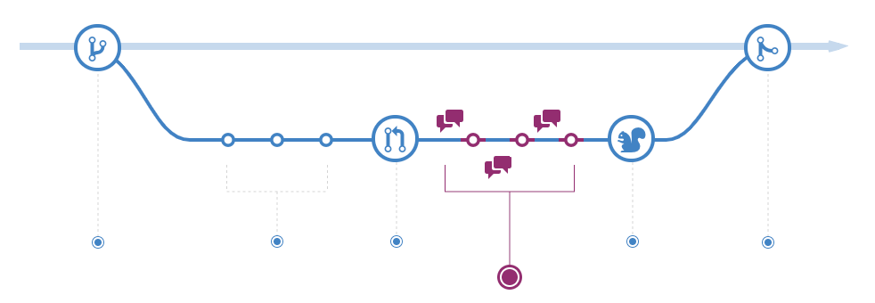

Flujo de Contribuir
El flujo de trabajo para contribuir a PyBAQ es el mismo de casi todos los proyectos de software: pull request.
- Pull/Fork: Crea una copia del repositorio en tu cuenta de GitHub.
- Branch: Crea una rama con un nombre relacionado a la contribución que harás.

- Commit: Realiza los cambios en el código. Por ejemplo: redacta un nuevo articulo. Guarda los cambios en esa rama (branch) y guardalos haciendo un commit.
- Push: Envía los cambios que has vinculado a la rama a tu repositorio.

- Pull Request: Has una solicitud de inclusión de tu código en la pagina.

- Discuss: Discute los cambios que has introducido con los dueños del repositorio original. Si hay cambios solo debes realizarlos repitiendo los pasos 3 y 4; el pull request abarcará los commits que hagas a esa rama hasta que sea aceptado. 
- Rebase + Merge: Ver en articulo original.

Modo Fácil
La facilidad de este artículo consiste en el uso de Codespaces. Codespaces es un entorno de trabajo virtual provisto por Github. Una cuenta gratis cuenta con 60 horas-nucleo de ejecución. Allí puedes realizar los pasos 3 y 4 sin necesidad de descargar el repositorio y configurar Lektor.
Editar
Tras crear una rama, podemos abrir un codespace, gracias al archivo .devcontainer.json se creará un codespace con todo lo necesario.

El proceso de creación puede tardar un poco la primera vez que lo abres.
Una vez abre el editor verás 3 partes:
- El navegador de archivos
- Una consola con lektor server en Ejecución
- Una ventana de navegador simple mostrando la pagina generada.
La página puede abrirse en una pestaña aparte usando el botón en la esquina superior derecha (ver flecha).
Por ultimo, puedes usar el editor para realizar tanto commits como push, pero lo mas facil hacerlo tras cerrar la ventana del codespace:
- Exportar cambios a la rama.
- Cerrar el codespace
Es importante cerrar el codespace para evitar que consuma mas tiempo de ejecución.
Ante las dudas, no dudes en preguntar.